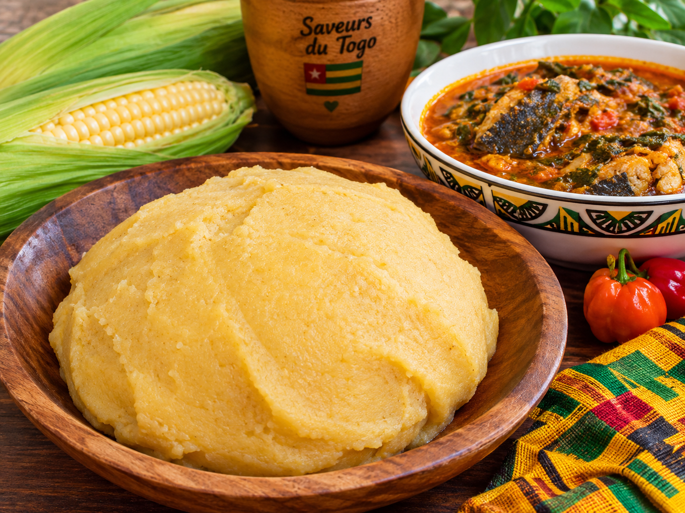

Akoumé 🇹🇬
L'Akoumé est une préparation traditionnelle à base de maïs, très appréciée au Togo.

🥘 Ingrédients
- Farine de maïs
- Eau
- Une pincée de sel
👩🏽🍳 Préparation
- Faire chauffer de l'eau dans une casserole.
- Ajouter progressivement la farine de maïs tout en mélangeant.
- Continuer à mélanger afin d'obtenir une pâte homogène.
- Laisser cuire quelques minutes en continuant de remuer.
- Servir chaud avec la sauce de votre choix.
💡 Petit conseil
L'Akoumé peut être accompagné de différentes sauces togolaises, notamment une sauce aux légumes, au poisson ou à la viande.